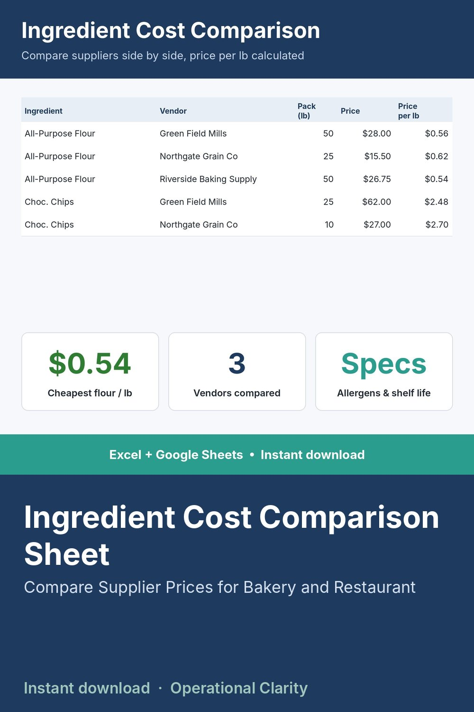

Ingredient Cost Comparison Sheet

COMPARE VENDORS FOR THE SAME INGREDIENT WITHOUT DOING THE MATH BY HAND.
Log multiple vendors' specs for the same ingredient side by side - even when they sell different package sizes. This sheet automatically calculates price-per-unit so you're comparing apples to apples, and the dashboard finds the cheapest vendor per ingredient automatically.
WHAT IT DOES
- Log each vendor's spec sheet: package size, price, key specs (protein %, cocoa %, whatever matters for that ingredient), allergens, shelf life, country of origin
- Automatic price-per-unit calculation regardless of package size differences
- Comparison Dashboard automatically finds the cheapest vendor and price per ingredient
WHAT'S INCLUDED
- Excel file (.xlsx) - no macros
- Start Here tab with setup instructions
- Sample data included (flour and chocolate chip sourcing examples)
WHO THIS IS FOR
Bakery and food business owners sourcing the same ingredient from multiple suppliers who want a fast, accurate way to compare real cost - not just sticker price.
INSTANT DOWNLOAD - no physical item will be shipped. Because this is a digital product, all sales are final.